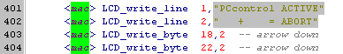

December 2004
JALcc macros
|
|
|
|
|
|
|
|
User Macros
pJAL |
|
Write_String
tones tones1 |
pjal_rpd pjal rpd_led6 rpd_motor_l293 rpd_motor_dual_l272 rpd_motor_l272 rpd_sharp_gp2d02 rpd_us_ranger rpd_lcd rpd_ps2_keyboard rpd_ir_remote rpd_joystick
|
|
JALcc macro's extends the possibilities of JAL, while all files maintain (almost) fully compatible with JAL.
For the moment only a number of predefinied macros are available.
In JALcc, normally you'll only will see the macro layout.
By clicking on the book button it's possible to view the full JAL expansion.
If after compilation an error in a file is encountered, then the file will also be openend in the full JAL expansion.
There are 2 macro statements, an inline macro statement and a block macro statement.
The functional part a macro statement consists of one of the predefinied macronames followed by zero or more arguments.
As separators between the macro-elements, spaces, commas and equal-sign may be used.
A string is definied as a text between double quotes.
Examples:
string0 "this is a string definition" ;and here is some comment
stringtable some_music_tables
interrupt_main
Generates a sine table for one quadrant, ..0..90 degrees onzin, Nbits, Nsteps

calling

|
If the book button is closed, the macro layout is showed. (in this example the inline macro command is used) |
If the book is open, the JAL layout is showed. The macro statement is still visible, but is converted to JAL comment. |
|
|
|
|
IO_pin argument1 argument2 |
Definies (without redundacy) all related parameters of an IO-pin argument1 = significant part of the name to be used for all related parameters argument2 = valid io-pin |
Here the block macro is showed in it's macro layout.

And the macro expansion (only the first 2 lines !!) in the JAL layout.

|
Designed for (almost) pure sequential statemachines. Using these macros, makes a program more readable and moving or inserting states is made a lot simpler.
|
|
13-8-2005: definition of the variable _tmr0_preset included in the macro
|
Calculates and sets the optimal TMR0 settings, given the Xtal-frequency and the pulse-period. Both parameters may be floating point. If the desired period can not be set, a pragma error is generated. <mac> TMR0 Xtal-MHz , Period_usec |
|
These macros require the use of a library hd44780_4.JAL to support the necessary procedures !!
|
LCD_write_line <linenr> <string> |
Clears the selected line, then writes the string at the beginning of that line. <linenr> = linenumber [1..max] (totally normal human numbering!!) |
|
LCD_write_string <position> <string> |
Writes the string starting at the indicated position. <position> = start-position [1..max] (human notation!!) |
|
LCD_write_byte <position> <byte> |
Writes a decimal byte at the indicated position. |
Example:
In this example 2 down-arrows are added in the second line. These down-arrows are made through the character rom.

|
StringTable argument1 |
Generates the header of the subroutine defining a lookuptable argument1 = name of the procedure |
|
String argument1 |
Definies a string in a lookup-table argument1 = de string (enclosed in double quotes) |
|
String0 argument1 |
Definies a string in a lookup-table and terminates the string with a NULL byte argument1 = de string (enclosed in double quotes) |
|
StringTable_End |
Generates the end of a lookup-table procedure |
|
<mac> FILE_ID |
Inserts filepath + filename + filedate into the codesegment of the PIC |
For an example of using lookup-tables, see for instance play_music.jal.
|
Byte2_ASSIGN arg1 = arg2 Byte3_ASSIGN arg1 = arg2 Byte4_ASSIGN arg1 = arg2 arg1 = variable to be assigned arg2 = (another) variable or a numerical constant Note: here the equal sign "=" is used as a separator, but that could be any valid separator. |
Assignes a multi-byte variable to another variable or to a numerical constant
|
|
Byte2_DECLARE TEST Byte3_DECLARE TEST Byte4_DECLARE TEST Byte2_ADD arg1 = arg2 , arg3 Byte3_ADD arg1 = arg2 , arg3 Byte4_ADD arg1 = arg2 , arg3 Byte2_SUB arg1 = arg2 , arg3 Byte3_SUB arg1 = arg2 , arg3 Byte4_SUB arg1 = arg2 , arg3 Byte3_MUL arg1 = arg2, arg3 Byte2_INC arg1 Byte3_INC arg1 Byte4_INC arg1 Byte3_DEC arg1 Byte2_CMP arg1 = arg2 , arg3 Byte3_CMP arg1 = arg2 , arg3 Byte4_CMP arg1 = arg2 , arg3 Byte3_SHL arg1 , arg2 Byte3_ROL arg1 , arg2 Byte3_SHR arg1 , arg2 Byte3_ROR arg1 , arg2 Byte3_LOG arg1 arg1 = variable to be assigned arg2 = (another) variable or a numerical constant arg3 = (another) variable or a numerical constant |
var byte TEST1, TEST2 var byte TEST1, TEST2, TEST3 var byte TEST1, TEST2, TEST3, TEST4 arg1 = arg2 + arg3 arg1 = arg2 - arg3 arg1 = arg2 * arg3 INC ( arg1 ) DEC ( arg 1 ) arg1 = ( arg2 == arg3 ) ;arg1 is of type bit !! arg1 = arg1 SHL arg2 ; shift left and fill up with Zeroes arg1 = arg1 ROL arg2 ; rotate left through carry arg1 = arg1 SHR arg2 ; shift right arg1 = arg1 ROR arg2 ; rotate right arg1 = LOG ( arg1 ) |
|
|
|
|
|
|
|
stepper_acceleration stepper_acc1, par2 ,par3 ,par4 |
This macro will generate a table for a constant acceleration / deceleration. -- parameter 1 = function/table name, must be "stepper_acc1" -- parameter 2 = time resolution in 100us units -- parameter 3 = maximum speed in steps/sec -- parameter 4 = acceleration time in 100 msec units |
|
stepper_do_steps par1, par 2 stepper_run_into par1, par2 |
These macro's will call procedures with multi-byte variables. par1 = motor number par2 = 4-byte integer (may be a variable or a constant) examples stepper_do_steps 1, 3047 stepper_run_into 1, position3 |
These macros are not meant as a simplification, but as a generalization. They offer the possibillity to write universal libraries with interrupt routines enclosed in the library, where the coupling of these interrupt routines to the "pragma interrupt" is done in the main program.
Some special constructions were added to work around some JAL errors (call to all interrupt subroutines after the main program loop, "asm nop" at the end of the interrupt routine).
Defining a interrupt routine in a library is done in the following way:
|
With macro statements |
The orginal JAL style |
|
procedure TMR0_interrupt is <mac> interrupt_sub TMR0_interrupt T0IF 5 |
procedure TMR0_interrupt is pragma interrupt |
In the mainjal file (or somewhere else, after all separate interrupt routines are declared) all the interrupt routines can be linked together with the following macro-statement:
<mac> interrupt_main
If there's need to change the priority within the generated interrupt routine, the following statement can be used
<mac> interrupt_prio TMR0_interrupt 20
Overview
|
interrupt_sub argument1 argument2 argument3 |
identifies a subroutine (in a library) as part of the interrupt routine argument1 = name of the subroutine argument2 = the flag will launch this subroutine argument3 = the priority of this subroutine (0...2^31) |
|
interrupt_prio argument1 argument2 |
to change the priority of some part of the interrupt routine argument1 = name of the subroutine argument2 = the new priority of this routine |
|
interrupt_main |
to generate the total interrupt routine |
Example of the macro statements to generate the main interrupt routine
The corresponding macro expansion